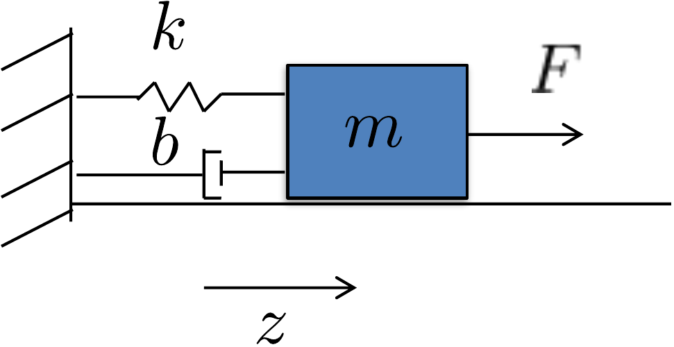
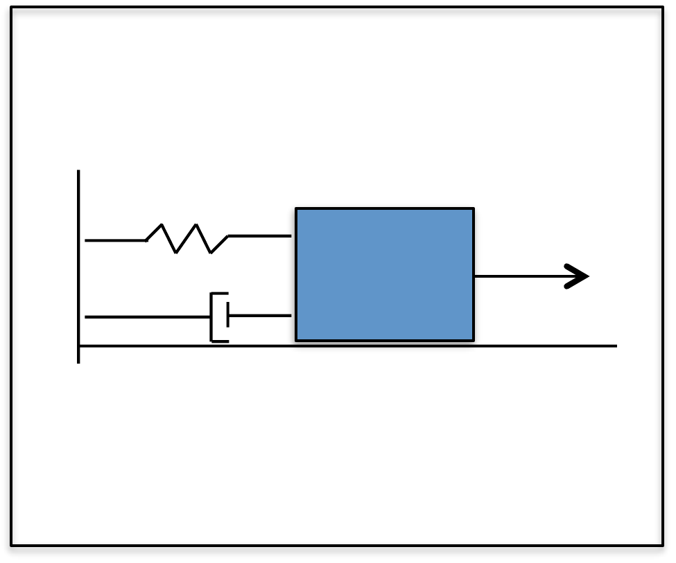

Part VI
Homework Problems
D Design Study: Mass Spring Damper
Figure 19.1 shows the mass-spring-damper system. The mass slides along a frictionless level surface and is connected to a wall by a spring with spring constant \(k\) and a damper with damping constant \(b\). The position of the mass is given by \(z\), where \(z=0\) is the position where the spring is not stretched. The speed of the mass is given by \(\dot{z}\). An external force \(F\) is applied to the mass as shown in Fig. 19.1.
Assume the following physical constants: \(m=5\) kg, \(k=3\) N/m, \(b=0.5\) N-sec/m.

D.2 Kinetic energy.
D.3 Equations of Motion.
D.4 Linearize equations of motion.
D.5 Transfer function model.
D.6 State-space model.
D.7 Pole placement using PD.
D.8 Second-order design.
D.9 Integrators and system type.
D.P.6 Root locus PID.
D.10 Digital PID.
D.11 Full state feedback.
D.12 Full state with integrator.
D.13 Observer based control.
D.14 Disturbance observer.
D.15 Frequency Response.
D.16 Loop gain.
D.17 Stability margins.
D.18 Loopshaping design.

Homework D.2
(a) Using the configuration variable \(z\), write an expression for the kinetic energy of the system.
(b) Create an animation of the mass-spring-damper system. The input should be a variable \(z\). Turn in a screen capture of the animation.
Homework D.3
(a) Find the potential energy for the system.
(b) Define the generalized coordinates.
(c) Find the generalized forces and damping forces.
(d) Derive the equations of motion using the Euler-Lagrange equations.
(e) Referring to Appendices P.1, P.2, and P.3, write a class or s-function that implements the equations of motion. Simulate the system using a variable force input. The output should connect to the animation function developed in homework D.2.
Homework D.4
For the mass-spring-damper:
(a) Find the equilibria of the system.
(b) Linearize the system about the equilibria using Jacobian linearization.
(c) Linearize the system using feedback linearization.
Homework D.5
For the equations of motion for the mass-spring-damper,
Using the Laplace transform, convert from time domain to the s-domain.
Find the transfer function from the input force \(F\) to the mass position \(z\).
Draw the associated block diagram.
Homework D.6
For the equations of motion for the mass-spring-damper, define the states as \(x=(z,\dot{z})^{\top}\), and the input as \(u=F\), and the measured output as \(y=z\). Find the linear state-space equations in the form \[\begin{aligned} \dot{x} &= Ax + Bu \\ y &= Cx + Du. \end{aligned}\]
Homework D.7
(a) Given the open-loop transfer function from force to position in Homework D.5, find the open-loop poles of the system, when the equilibrium position is \(z_e=0\).
(b) Using the PD control architecture shown in Figure 7.2, find the closed-loop transfer function from \(z_r\) to \(z\) and the closed-loop poles as functions of \(k_P\) and \(k_D\).
(c) Select \(k_P\) and \(k_D\) to place the closed-loop poles at \(p_1=-1\) and \(p_2=-1.5\).
(d) Using the gains from part (c), implement the PD control for the mass-spring-damper in simulation and plot the response of the system to a 1 m step input.
Homework D.8
For the mass-spring-damper, do the following:
(a) Suppose that the design requirements are that the rise time is \(t_r \approx 2\) seconds, with a damping ratio of \(\zeta=0.707\). Find the desired closed-loop characteristic polynomial \(\Delta_{cl}^d(s)\), and the associated pole locations. Find the proportional and derivative gains \(k_P\) and \(k_D\) to achieve these specifications, and modify the simulation from HW D.7 to verify that the step response satisfies the requirements.
(b) Suppose that the size of the input force is limited to \(F_{\max}=6\) N. Modify the simulation to include a saturation block on the force \(F\). Using the rise time \(t_r\) as a tuning parameter, tune the PD control gains so that the input just saturates when a \(1\)-meter step is applied to \(z^r\). Plot the step response showing that saturation does not occur for a \(1\)-meter step input with the new control gains.
Homework D.9
(a) When the controller for the mass-spring-damper is PD control, what is the system type? Characterize the steady-state error when the reference input is a step, a ramp, and a parabola. How does this change if you add an integrator?
(b) Consider the case where a constant disturbance acts at the input to the plant (for example an inaccurate knowledge of the spring constant in this case). What is the steady-state error to a constant input disturbance when the integrator is not present, and when it is present?
Homework D.P.6
Add an integrator to obtain PID control for the mass-spring-damper.
Put the characteristic equation in Evans’ form and use the MATLAB
rlocus command to plot the root locus versus the integrator
gain \(k_I\). Select a value for \(k_I\) that does not significantly change
the other locations of the closed-loop poles.
Homework D.10
The objective of this problem is to implement the PID controller using only measured outputs of the system.
(a) Modify the system dynamics file so that the parameters \(m\), \(k\), and \(b\) vary by up to 20% of their nominal value each time they are run (uncertainty parameter = 0.2). Additionally, add a step input for a disturbance with an amplitude of \(0.25\).
(b) Change the simulation files so that the input to the controller is the output and not the state. The controller should only assume knowledge of the position \(z\) and the reference position \(z_r\).
(c) Implement the PID controller designed in Problems D.11 in simulation. Use the dirty derivative gain of \(\sigma=0.05\). Tune the integrator to remove the steady-state error caused by the uncertain parameters.
Homework D.11
The objective of this problem is to implement a state-feedback controller for the mass-spring-damper system using the full state. Start with the simulation files developed in Homework D.10.
(a) Select the closed-loop poles as the roots of the equation \(s^2 + 2\zeta\omega_n s + \omega_n^2 = 0\), where \(\omega_n\) and \(\zeta\) were found in Homework D.8.
(b) Add the state-space matrices \(A\), \(B\), \(C\), \(D\) derived in Homework D.6 to your param file.
(c) Verify that the state-space system is controllable by checking that \(\text{rank}(\mathcal{C}_{A,B})=n\).
(d) Find the feedback gain \(K\) so that the eigenvalues of \((A-BK)\) are equal to the desired closed-loop poles. Find the reference gain \(k_r\) so that the DC gain from \(z_r\) to \(z\) is equal to one. Note that \(K=(k_p, k_d)\) where \(k_p\) and \(k_d\) are the proportional and derivative gains found in Homework D.8. Why?
(e) Modify the control simulation code to implement the state feedback controller and then simulate. You do not need to include a disturbance input. To construct the state \(x=(z, \dot{z})^{\top}\) use a digital differentiator to estimate \(\dot{z}\).
Homework D.12
(a) Modify the state feedback solution developed in Homework D.11 to add an integrator with anti-windup to the feedback loop for \(z\).
(b) Add a constant input disturbance of 0.25 Newtons to the input of the plant and allow the plant parameters to vary up to 20%.
(c) Tune the integrator pole (and other gains if necessary) to get good tracking performance.
Homework D.13
The objective of this problem is to design an observer that estimates the state of the system and to use the estimated state in the controller designed in Homework D.12.
(a) For the sake of understanding the function of the observer, for this problem we will use exact parameters, without an input disturbance. Modify the mass dynamics so that the parameters known to the controller are the actual plant parameters (uncertainty parameter \(\alpha=0\)).
(b) Verify that the state-space system is observable by checking that \(\text{rank}(\mathcal{O}_{A,C})=n\).
(c) In the control block, add an observer to estimate the state \(\hat{x}\), and use the estimate of the state in your feedback controller. Tune the poles of the controller and observer to obtain good performance.
(d) Modify the simulation files so that the controller outputs both \(u\) and \(\hat{x}\). Add a plotting routine to plot both the state and the estimated state of the system on the same graph.
(e) As motivation for the next chapter, add an input disturbance to the system of \(0.25\) and observe that there is steady-state error in the response even though there is an integrator. This is caused by a steady-state error in the observation error. In the next chapter we will show how to remove the steady-state error in the observation error.
Homework D.14
(a) Modify your solution from HW D.13 so that the uncertainty parameter is \(\alpha=0.2\), representing 20% inaccuracy in the knowledge of the system parameters, and so that the input disturbance is \(0.25\). Also, add noise to the output channel \(z_m\) with standard deviation of \(0.001\).
(b) Add a disturbance observer to the controller, and verify that the steady-state error in the estimator has been removed. Tune the system to get good response.
Homework D.15
Draw by hand the Bode plot of the mass-spring-damper from force \(\tilde{F}\) to position \(\tilde{z}\). Use the bode
command in MATLAB or Python and compare your results.
Homework D.16
For the mass-spring-damper, use the bode command (from
Python or MATLAB) to create a graph that simultaneously displays the
Bode plots for (1) the plant, and (2) the plant under PID control, using
the control gains calculated in
Homework D.10. Use the dirty
derivative when implementing the derivative portion of the PID
control.
(a) What is the tracking error to a unit ramp under PID control?
(b) If the frequency content of the input disturbance \(d_{in}(t)\) is below \(\omega_{d_{in}} = 0.1\) radians per second, what percentage of the input disturbance shows up in the output \(z\) under PID control?
(c) If all of the frequency content of the noise \(n(t)\) is greater than \(\omega_{no} = 100\) radians per second, what percentage of the noise shows up in the output signal \(z\)?
Homework D.17
For the mass-spring-damper, use the bode and
margin commands (from MATLAB or Python) to find the phase
and gain margin for the closed-loop system under PID control. On the
same graph, plot the open-loop Bode plot and the closed-loop Bode plot.
What is the bandwidth of the closed-loop system, and how does this
relate to the crossover frequency? Use the gains found in
HW D.10.
Homework D.18
For this homework assignment we will use the loopshaping design technique to design a controller for the mass-spring-damper problem with dynamics given by \[Z(s) = \left(\frac{\frac{1}{m}}{s^2 + \frac{b}{m}s + \frac{k}{m}}\right) F(s).\] The controller designed in this problem will take the form \[F = C(s)E(s),\] where the error signal is \(e=z^r_f - z\), where \(z^r_f\) is the prefiltered reference command. Find the controller \(C(s)\) so that the closed-loop system meets the following specifications.
Reject constant input disturbances.
Track reference signals with frequency content below \(\omega_r=0.1\) rad/s to within \(\gamma_r=0.03\).
Attenuate noise on the measurement of \(z\) for all frequencies above \(\omega_n=500\) rad/s by \(\gamma_n=0.001\).
The phase margin is close to \(PM=60\) degrees.
Use a prefilter \(F(s)\) to reduce any peaking in the closed-loop response.
Implement a control strategy in simulation using the state-space or digital filter equivalents of \(C(s)\) and \(F(s)\).